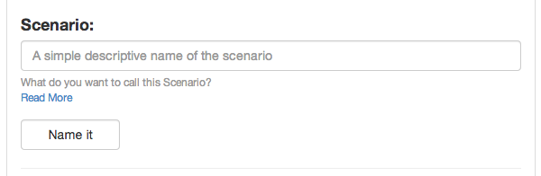

All test must have one Scenario at least but can have more. This is a how a test will typically layout.
A Scenario will summarize that Step in the test.
Feature: Your Overall Test name like User Interaction
Scenario: User Edits a page
Scenario: User Deletes a page
A scenario can have tags (more on tags)[http://alnutile.github.io/behat_editor/tags.html]
So then this would be tagged @javascript, note this only applies to the one Scenario.
Feature: Your Overall Test name like User Interaction
@javascript
Scenario: User Edits a page
Scenario: User Deletes a page
More Reading